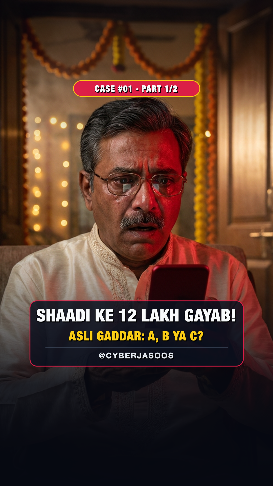
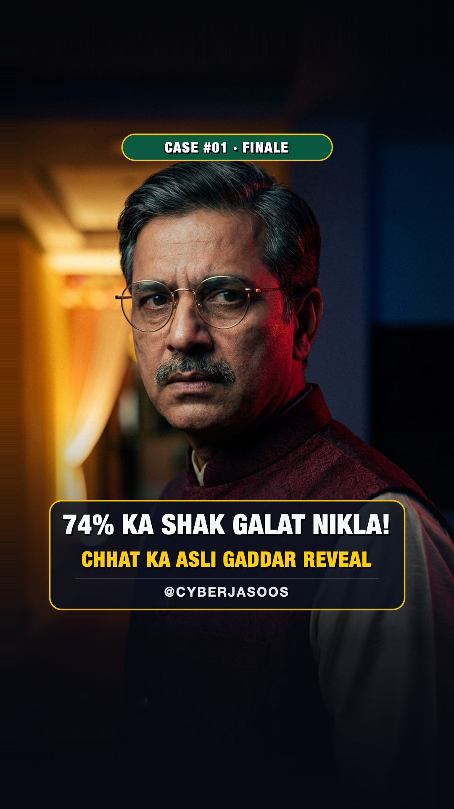
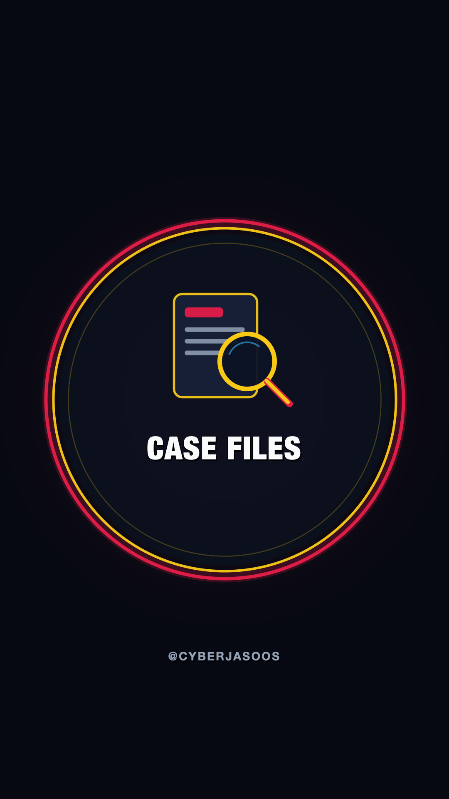
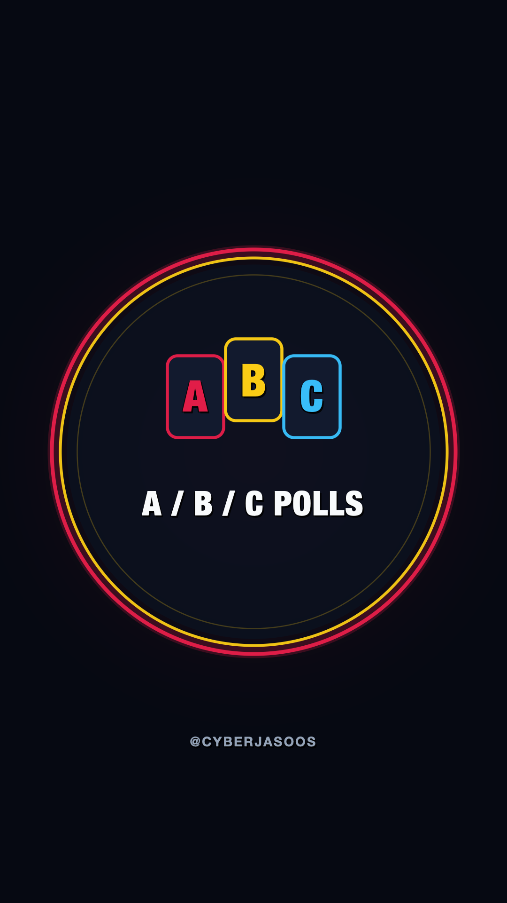
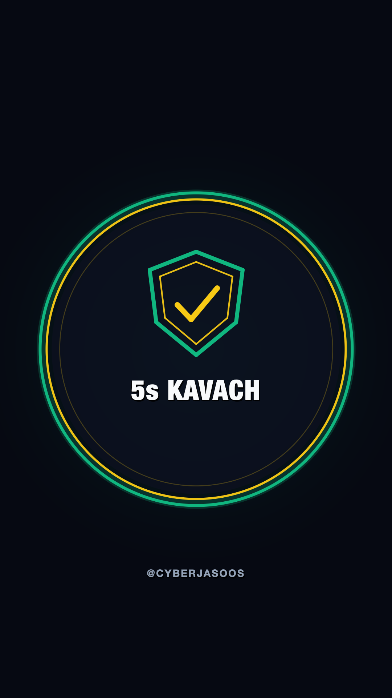
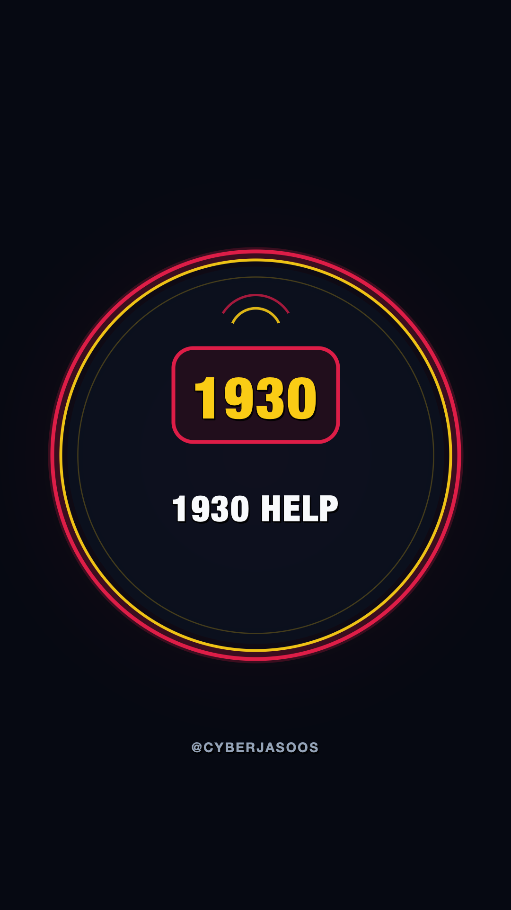

Centralized 5-Tab Cyber Jasoos V12 Reels Factory, Launch & CLI Hub
Organized around repeatable daily episode creation first: watch the 3m 57s Hinglish Video Guide (5 Chapters) & compile Case #02–Season 6 Reels (teaser, standard_reel, or deep_thriller across up to 12 parts) in Tab 1, execute tonight's 85% Mac Web (instagram.com) + 15% Android App Case #01 launch in Tab 2, browse all 28 Python & Remotion CLI tools in Tab 3, check V12 Dual-Mode props/safe zones & the 6-season map in Tab 4, and reference one-time setup in Tab 5.
case01-part1-shaadi-12lakh-scam.mp4 (= 00-case01-part1-publish-ready.mp4, 55.99s V12 Radio-Noir tight master, ur-IN-SalmanNeural + hi-IN-MadhurNeural + compound shock_vacuum + -31dB stereo suspense bed) and covers directly from Mac Web at full 1080p bitrate, use Android only for the 4 mobile-only Meta taps (2FA, Bio Link, Pin Comment, 3-Option Poll Sticker), and unlock 9.97/10 commercial licensing in 1 command via $0 free-tier Azure Speech F0 (--voice-mode azure, COMMERCIAL_API) or OWN_VOICE whenever monetizing.
End-to-End Hinglish Video Guide (3m 57s · 5 Chapters)
Master stitched video at renders/guide/cyber-jasoos-automation-master-guide.mp4 — produced by this exact pipeline using YAML Story Briefs with preset: guide_walkthrough (built for non-crime explainer & tutorial Reels alongside default crime_case mysteries), V12 2D vector lip-sync (comic_noir_rig), deterministic plates from scripts/render_guide_plates.py, and multi-chapter stitching via scripts/stitch_video_guide.py.
open renders/guide/cyber-jasoos-automation-master-guide.mp4
| Chapter & Timestamp | What You See in Action | Standalone Chapter Reel MP4 |
|---|---|---|
| 00:00 — Ch 1 (51.4s) | 5-Tab Web Hub, .png/.jpg Auto-Cast & 35-Line Story Brief (preset: guide_walkthrough) | renders/guide/ch01-story-brief-autocast.mp4 |
| 00:51 — Ch 2 (50.8s) | Single-Command build_episode.py, Voice Modes & Safe-Zone Self-Heal | renders/guide/ch02-self-healing-build.mp4 |
| 01:42 — Ch 3 (49.2s) | 7:40 PM IST Upload SOP, Comment Tally & 95% Zero-AI Part 2 Branch | renders/guide/ch03-upload-and-poll-branch.mp4 |
| 02:31 — Ch 4 (55.3s) | SQLite Mosseri Growth Ledger & Auto-Inherited Defaults | renders/guide/ch04-growth-ledger-learning.mp4 |
| 03:27 — Ch 5 (29.9s) | V12 Radio-Noir DSP, Voter Spotlight & 2D Comic Rig (comic_noir_rig + BAND/TRAP Poll) | renders/guide/ch05-v12-radio-noir-rig.mp4 |
1. Repeatable 6-Stage V12 Reel Factory (Zero-AI Automation vs. Human Split)
Every new Case #02–Season 6 episode (across teaser, standard_reel, or deep_thriller profiles, 2..12-part serialized arcs, or preset: guide_walkthrough explainers) flows through these 6 deterministic stages while keeping story hooks, optional human voiceover, and 30-second mobile Meta actions in your control.
Stage 1: Hook Score & V12 YAML Brief
Pick the real RBI / I4C 1930 twist and write a 35-line YAML brief (supports durationProfile, paceStyle: radio_noir, hudMode: minimal_cinema, or preset: guide_walkthrough). competitor_hooks.py --score grades hooks (0-100); compile_story_brief.py + hinglish_tts_translit.py emit a validated EpisodeManifest.
Stage 2: Dual-Mode Cast, Tactile Props & 2.5D Mattes
Drop raw .png/.jpg/.webp art into assets/characters/caseXX/raw/ (or run comic_noir_rig 2D vector lip-sync via ComicNoirRigActor). standardize_cast.py --auto-frame + generate_depth_mattes.py build 1080x1920 parallax plates paired with TactilePropRig (*21* dialer, ringing burner phone & Jasoos Ka Kavach).
Stage 3: Radio-Noir Voice DSP, Word Anchors & Build
prepare_voice.py + voice_dsp_and_providers.py apply FFmpeg phone_call, whisper, room_panic & shock_vacuum DSP + -31dB sidechained suspense bed across recorded, sarvam_bulbul, elevenlabs_v3, gemini_tts, or --fallback-zero-ai (kokoro/edge). word_anchor_align.py snaps forced-aligned cuts before build_episode.py renders MP4s.
Stage 4: Step-7 12-Frame Contact Sheet & Studio UAT
render_qa_contact_sheet.py emits a 12-frame (4x3) contact sheet checking black frames, near-duplicate scenes & 124px right-rail pixel clearance; render_instagram_ui_mockup.py overlays Reels chrome, and npm run uat:dom verifies NOIR_GRID + minimal_cinema (<=20% overlay cap).
Stage 5: Voter Spotlight Flywheel & Counterfactuals
Upload 1080p MP4 + Cover on Mac Web (Original 9:16), Pin + add 3-Option Poll Sticker on Android, fetch deduplicated A/B/C or 1-word scarcity votes + clean @username cards via fetch_voter_spotlight.py, and inject --poll-json + "AGAR..." counterfactuals via apply_poll_result.py.
Stage 6: SQLite Mosseri Telemetry & Auto-Improvement
instagram_ops.py record-metrics + growth_ledger.py store Views, Reach, Saves, Shares & Vote rates in data/growth_ledger.sqlite3, rank episodes via 0.45*Share + 0.35*Save + 0.20*Vote, tune data/learned_defaults.json via instagram_ops.py learn, and export clean Pages HTML via export_sanitized_pages.py.
V12 Radio-Noir & Interactive Storytelling Engine (4 Core Capabilities)
1. Flexible Duration Profiles & 12-Part Serialized Arcs
Supports teaser (25-42s), standard_reel (42-75s), and deep_thriller (75-125s) across up to 12-part serialized case arcs at 130-185 WPM (Radio-Noir target 142-155 WPM with 0.45-2.0s dramatic suspense pauses).
2. Dual-Mode Non-Uncanny Character & Prop System
Photoreal noir_cinema (NoirParallaxStage breathing/blink micro-life + TactilePropRig animated *21* dialer, ringing burner phone & Jasoos Ka Kavach shield, hudMode: "minimal_cinema" <=20% overlay cap + captionStyle: "cinema_pop") plus optional data-driven 2D vector lip-sync comic_noir_rig (ComicNoirRigActor).
3. Radio-Noir Voice DSP & Pluggable Acting Providers
voice_dsp_and_providers.py runs per-clause FFmpeg phone_call, whisper, room_panic & shock_vacuum DSP + -31dB sidechained suspense bed across recorded (own voice), sarvam_bulbul, elevenlabs_v3, gemini_tts, and automatic --fallback-zero-ai (kokoro/edge + DSP).
4. Interactive Voter Flywheel & Step-7 Visual QA
fetch_voter_spotlight.py → apply_poll_result.py --poll-json injects @username comment spotlight cards, "AGAR..." counterfactual reveals & 1-word scarcity dilemma_tradeoff polls; word_anchor_align.py snaps forced-aligned cuts; render_qa_contact_sheet.py audits a 12-frame contact sheet for black-frame, duplicate & right-rail defects.
3-Layer Voice Quality & Intelligibility Gate (90%+ Zero-AI Studio Clarity)
1. Zero-AI Native Script Phonetic Transliterator (hinglish_tts_translit.py)
Automatically converts Roman Hinglish, currency/numbers, times, USSD codes (*21*, *#21#, ##002#), and CLI/tech loanwords into clean unvocalized Urdu Nastaliq (ur-IN-SalmanNeural) and Hindi Devanagari (hi-IN-MadhurNeural / Kokoro) inside compile_story_brief.py, preventing broken English-letter G2P and NoAudioReceived script crashes.
2. Validator Native-Script & Articulation Rate Guards (validate_episode.py + self_heal_rules.py)
Blocks raw Latin, wrong-script, or Arabic harakat diacritics in ttsClauses[*].hi and clamps Edge speech-rate self-healing to [+2%, +20%] paired with micro-pause scaling ([0.10s, 0.26s]) while preserving intentional 0.45-2.0s Radio-Noir suspense pauses.
3. Local Cached MLX Whisper ASR Intelligibility Gate (build_episode.py)
Audits generated WAV audio offline via local cached mlx-community/whisper-base-mlx (HF_HUB_OFFLINE=1, nativeScriptRatio >= 0.55, wordCount >= 12) before allowing MP4 render (--skip-asr-audit bypass available when local cache is absent).
1-Click Copy Repeatable Pipeline Commands (Stages 1–6)
python3 scripts/competitor_hooks.py --score "10:15 PM Grand Hotel reception: 3 guests scanned Shagun QR and lost Rs 8,40,000 while phones stayed silent!" && python3 scripts/export_teleprompter.py --output renders/teleprompter-export.md
.venv_audio/bin/python scripts/standardize_cast.py --case-dir assets/characters/case02 --auto-frame && .venv_audio/bin/python scripts/generate_depth_mattes.py --skip-existing && .venv_audio/bin/python scripts/generate_cinema_foley.py
.venv_audio/bin/python scripts/prepare_voice.py --episode episodes/case01-shaadi-12lakh/case01-part1-shaadi-12lakh.json --mode sarvam --ambience-bed --fallback-zero-ai --sync-manifest && python3 scripts/word_anchor_align.py --episode episodes/case01-shaadi-12lakh/case01-part1-shaadi-12lakh.json && python3 scripts/build_episode.py --brief episodes/briefs/case02-part1-shaadi-qr.yaml --render-mp4
.venv_audio/bin/python scripts/render_qa_contact_sheet.py --video renders/publish/case01-part1-shaadi-12lakh/01-reel-video.mp4 --manifest episodes/case01-shaadi-12lakh/case01-part1-shaadi-12lakh.json --fail-on-black && .venv_audio/bin/python scripts/render_instagram_ui_mockup.py --episode episodes/case01-shaadi-12lakh/case01-part1-shaadi-12lakh.json --multi-shot-grid --output renders/qa/case01-part1-ig-grid.png && (cd engine && npm run typecheck && npm run uat:dom)
# Fetch @username voter spotlight cards & run single-command Part 2 poll injection + voice + word-anchor + MP4 build: python3 scripts/fetch_voter_spotlight.py --media-id <PART1_MEDIA_ID> --options A,B,C --output renders/part1-poll.json && python3 scripts/build_episode.py --episode episodes/case01-shaadi-12lakh/case01-part2-asli-gaddar.json --poll-json renders/part1-poll.json --ambience-bed --render-mp4 # Offline manual tally alternative (explicit 1..99 %): python3 scripts/build_episode.py --episode episodes/case01-shaadi-12lakh/case01-part2-asli-gaddar.json --poll-winner C --poll-pct 74 --ambience-bed --render-mp4
python3 scripts/instagram_ops.py record-metrics --episode episodes/case01-shaadi-12lakh/case01-part1-shaadi-12lakh.json --media-id <PART1_MEDIA_ID> && python3 scripts/instagram_ops.py learn && python3 scripts/export_sanitized_pages.py --out-dir renders/pages-bundle
Starter YAML Story Brief Templates (Part 1 Whodunit + Part 2 Poll-Reveal with pollBranches)
id: case02-part1-shaadi-qr
season: 2
episodeNumber: 1
part: 1
title: "Shagun QR Ya Hotel Wi-Fi? Reception Par 8 Lakh Saaf!"
cyberConcept: "Quishing (Malicious QR Sticker Overlay) & Rogue Hotel Wi-Fi"
caseTag: "HOTEL RECEPTION · 8 LAKH SAAF"
realIncident:
incident: "RBI & MHA I4C 1930 Advisory (2024) Shagun QR Overlay Fraud"
year: 2024
impact: "Tampered UPI collect QR stickers over venue standees drain wedding guests"
lesson: "Receiving money never needs a UPI PIN; avoid open Wi-Fi for banking and dial 1930 in the golden hour."
scrollStopper:
badge: "RECEPTION ALERT · 10:15 PM"
text: "3 Mehmaano Ke A/c Se Rs 8,40,000 Saaf!"
tone: "danger"
plates:
hookHero: "characters/case02-shaadi-qr.png"
clueHero: "characters/case02-hotel-wifi.png"
twistHero: "characters/handoff-shadow.png"
payoffHero: "characters/kabir-closeup.png"
beats:
hook: "Grand Hotel reception par dulha-dulhan muskura rahe the, tabhi teen mehmaano ke phone ek saath baje: Aath lakh chalis hazaar gayab!"
escalation: "Kisi ne anjaan call nahi uthaya! Ek ne Hotel Wi-Fi joda, doosre ne lobby printer use kiya, aur teesre ne Shagun QR scan kiya!"
framework: "Jab Cyber Jasoos Kabir ne jaanch ki, toh theek das barah par lobby ke ek chhupe jaal ne chupke se UPI payment divert kar diya!"
micro_payoff: "Yaad rakhiye, paise lene ke liye UPI PIN kabhi nahi lagta! Thagi hote hi 1930 milaiye, par hotel lobby ka jaal abhi zinda tha!"
cliffhanger_vote: "Shak ke ghere mein teen suraag hain: Hotel Wi-Fi, Smart Printer, ya Shagun QR Standee! Neeche A, B, C comment kijiye, kyunki agle hi pal..."
suspects:
- { key: A, name: "Hotel Reception Wi-Fi", role: "10:05 PM · Free Lounge", timestampBadge: "10:05 PM", clue: "Fake Captive Portal!", image: "characters/case02-hotel-wifi.png" }
- { key: B, name: "Lobby Smart Printer", role: "10:08 PM · ID Check-In", timestampBadge: "10:08 PM", clue: "Cached Guest IDs!", image: "characters/case02-smart-printer.png" }
- { key: C, name: "Shagun QR Standee", role: "10:12 PM · Stage Gate", timestampBadge: "10:12 PM", clue: "Sticker Par Fake QR!", image: "characters/case02-shaadi-qr.png" }
id: s02e02-shaadi-qr-reveal
season: 2
episodeNumber: 2
part: 2
title: "Shagun QR Overlay Ka Pardafaash — 5-Sec UPI Kavach!"
cyberConcept: "UPI Collect Quishing Overlay vs. Rogue Wi-Fi Forensic Elimination"
caseTag: "CASE #02 FINALE · PARDAFAASH"
previousVoteResult:
winningOption: C
percentage: 74
outcomeVerdict: "74% viewers spotted the Shagun QR sticker trap before Kabir peeled back the tampered collect overlay."
pollBranches:
A:
episodeTitle: "{pct}% Voted Hotel Wi-Fi — Asli QR Jaal Khula!"
coldOpenTag: "{pct}% VOTED A · PARDAFAASH"
stopperText: "{pct}% Ne Wi-Fi Chuna — Asli Khel Stage Gate Par Tha!"
openingLine: "Aap mein se {pct_word} percent logon ko Hotel Wi-Fi par shak tha, magar Kabir ne jab stage gate ka QR standee chhua toh asli khel khul gaya!"
B:
episodeTitle: "{pct}% Voted Smart Printer — Asli QR Jaal Khula!"
coldOpenTag: "{pct}% VOTED B · PARDAFAASH"
stopperText: "{pct}% Ne Printer Chuna — Asli Khel Stage Gate Par Tha!"
openingLine: "Aap mein se {pct_word} percent logon ne Lobby Printer ko gaddar maana, magar Kabir ki forensic jaanch mein printer sirf dhokha nikla!"
C:
episodeTitle: "{pct}% Sahi Pehchane — Shagun QR Sticker Trap!"
coldOpenTag: "{pct}% BULLSEYE · QR OVERLAY"
stopperText: "{pct}% Bilkul Sahi — Stage QR Par Naya Sticker Chipka Tha!"
openingLine: "Kamaal ki nazar! Aap mein se {pct_word} percent logon ne bilkul sahi pakda — stage gate ke Shagun QR ke upar nakli UPI Collect sticker chipka tha!"
realIncident:
incident: "RBI & MHA I4C 1930 Advisory (2024) Tampered QR Collect Request Fraud"
year: 2024
impact: "Fraudulent QR overlays trigger outgoing UPI Collect/Pay prompts instead of Shagun transfers"
lesson: "Check payee name on screen, never enter UPI PIN to receive money, run finger over public QR stickers, and dial 1930 within the golden hour."
plates:
hookHero: "characters/case02-shaadi-qr.png"
clueHero: "characters/case02-hotel-wifi.png"
twistHero: "characters/kabir-investigating.png"
payoffHero: "characters/kabir-closeup.png"
beats:
hook: "Kamaal ki nazar! Aap mein se chauhattar percent logon ne bilkul sahi pakda — stage gate ke Shagun QR par nakli sticker chipka tha!"
escalation: "Kabir ne pehle Wi-Fi aur Printer jaanche: Wi-Fi sirf slow tha aur Printer mein bas hotel bills the, par 10:12 PM CCTV mein ek ajnabi standee par sticker chipkata dikha!"
framework: "Jaise hi mehmaano ne Shagun dene ke liye scan kiya, nakli QR ne mule merchant account khola aur jaldbazi mein logon ne bina naam padhe UPI PIN daal diya!"
micro_payoff: "Paanch second ka Suraksha Kavach yaad rakhiye: QR par ungli pheriye, screen par asli naam padhiye, paise lene par PIN kabhi mat daaliye, aur thagi hote hi 1930 milaiye!"
cliffhanger_vote: "Agla Case kaunsa kholein: Aadhi Raat Push-Bombing, Courier APK SMS Chori, ya Deepfake Boss Call? Neeche A, B, C comment kijiye, kyunki agle hi pal..."
suspects:
- { key: A, name: "2 AM MFA Push-Bomb", role: "Case #03 · SIM + Prompt", timestampBadge: "02:14 AM", clue: "14 Login Prompts!", image: "characters/kabir-closeup.png" }
- { key: B, name: "Courier APK SMS Mirror", role: "Case #04 · Fake Parcel", timestampBadge: "04:30 PM", clue: "Rs 5 Delivery Trap!", image: "characters/handoff-shadow.png" }
- { key: C, name: "Voice-Clone Emergency", role: "Case #06 · Fake Call", timestampBadge: "09:10 PM", clue: "30-Sec Cloned Audio!", image: "characters/sharma-shock.png" }
2. Tonight's Launch Pack & Brand Kit (Case #01 · 7:40 PM IST)
Folder on Mac: renders/publish/case01-part1-shaadi-12lakh/ · Upload 01-reel-video.mp4 (commercial Sarvam bulbul:v3 Radio-Noir master, 65.19s, @CYBERJASOOS end-card), renders/publish/brand-kit/01-profile-dp-1080x1080.png, and 02-reel-cover.png straight from Mac instagram.com! (Only drop the 4 tiny 180 KB renders/publish/brand-kit/02..05-highlight-*.png icons to Android if adding custom Highlight covers.)






Phase 4 — Hybrid Launch: Upload on Mac Web, Pin & Story Sticker on Android
-
1) Modal 1 (Select file): On Mac
instagram.com, click+ Create (left sidebar) → Post → Select from computer→ pickrenders/publish/case01-part1-shaadi-12lakh/01-reel-video.mp4.
2) Modal 2 (Crop — DO NOT SKIP): Click the Crop icon (bottom-left corner of preview) → select 9:16 (or Original) → click top-rightNext.
3) Modal 3 (Edit — Cover photo): Under Cover photo, clickSelect from computer→ pickrenders/publish/case01-part1-shaadi-12lakh/02-reel-cover.png→ click top-rightNext.Why Mac Web Upload Wins HereFeeds Instagram the locked55.99sV12 Radio-Noir 1080x1920 H.264 stereo master directly from disk with zero phone transfer, zero Data Saver downscaling, and -14.6 LUFS stereo foley/narration mixed inside!Audit / Web Crop Trap (Do Not Miss!)Instagram Desktop Web defaults Modal 2's preview crop to1:1square unless you click the bottom-left Crop button and choose 9:16 / Original before clickingNext! -
Click
Copy Captionbelow and paste straight into the Mac Web caption box. OpenAdvanced settings: if Add AI label is visible on web, toggle it ON now (otherwise toggle on Android in Step 4.3).Why Tags Only Categorize (Mosseri Rule)Per Instagram Head Adam Mosseri, hashtags do not boost Reels reach — they only index topic search (3-6 relevant tags is plenty; watch time & DM sends drive distribution).Audit / Desktop UI Quirk FlagInstagram's desktop web uploader often omits the manualAdd AI labeltoggle prior to publishing — so verify/enable it via... → Editon Android right after Step 4.3!Reel Caption + 6 Hashtags (896 / 2200)Subah beti ki doli uthne wali thi, magar aadhi raat Sharma Ji ke pairon tale zameen khisak gayi - shaadi account se poore Rs 12 Lakh saaf! Phone shaam se Puja Ghar mein band rakha tha, na koi anjaan call aaya na link khula - par Cyber Jasoos ki jaanch mein khula ki sangeet ke shor mein theek 7:42 PM par kisi ne chupke se *21* call-forwarding lagayi, jisse bank ki saari IVR OTP calls chhat par chalu ek farzi SIM par jaa rahi thin! 5-Sec Check: Apna phone abhi *#21# milakar check karein! Shak ke ghere mein 3 apne hain: A) Pados Ka Golu (7:40 PM 2 minute phone maangkar phone off aur gayab), B) Ramu Kaka (7:42 PM Puja Ghar ke paas, jeb mein naye SIM ka packet), ya C) Pappu Chachu (5 Lakh maange, 11:25 PM chhat par chupke baat karte dikhe). Asli gaddar kaun hai? Neeche A, B, ya C comment kijiye! #CyberJasoos #AsliGaddarKaun #ShaadiMystery #HindiCrimeStory #OTPScamAlert #CyberSafetyIndia
-
1) On Mac Web: Click Share at 7:45 PM IST. Open the published Reel on Mac Web, click
Copy Ballotbelow, and post it as the first comment.
2) On Android App (10 seconds): Open your profile → tap the Reel → long-press that comment → tap the top thumbtack Pin icon. If web hid the AI label, tap⋮ (top right) → Edit → Add AI label → Done.Why Post on Mac + Pin on AndroidPosting the 5-line ballot on Mac takes 2 seconds with zero phone typing, while Android supplies thePin commentand post-publishAdd AI labelcontrols missing from desktop web.Audit / Clock Heuristic FlagExact minute (7:45 PMvs8:20 PM) matters far less than completion rate and shares. Never rush past theOriginal 9:16crop check just to hit 7:45 PM on the dot.Creator First Comment (Post → Pin)LIVE TRACE: CHORI KA SIM ABHI BHI GHAR KI CHHAT PAR CHALU HAI! A = Pados Ka Golu (7:40 PM 2 minute phone maangkar gayab, phone switched off) B = Ramu Kaka (7:42 PM Puja Ghar ke paas, jeb mein naye SIM ka packet) C = Pappu Chachu (5 Lakh udhaar maange, 11:25 PM chhat par chupke baat karte mile) Saboot milaiye aur A, B, ya C comment kijiye - Part 2 mein teeno raaz khulenge!
-
While on the Reel in your Android app, tap paper-plane
Share → Add to story, select the POLL Sticker (tapAdd another optionfor 3 choices, max<= 22chars each:A: Pados Ka Golu[16],B: Ramu Kaka[12],C: Pappu Chachu[15]), place clear of center, publish Story, and save to Cases & Polls Highlights.Why Story on a 0-Follower Account?Stories do not bring cold traffic on Day 1 — their job is Profile Conversion! When non-followers tap@cyberjasoosfrom Reels, an active Story ring + Highlights makes the channel worth following for Part 2.Audit / Spoiler Trap (POLL vs QUIZ!)Use the POLL Sticker (shows only vote%), NEVER the Quiz Sticker! Instagram's Quiz Sticker flashes GREEN immediately when tapped — spoiling Part 2's culprit on Day 1! -
Refresh your Reel on Mac
instagram.com, clickCopy A/B/C Replybelow, add the voter's@handle+ tweak 2-3 words, and reply right from your Mac keyboard:Why Socratic Replies [2x Loop Boost]1) Multi-turn comment threads rank higher than dead "Thanks!" replies. 2) While a viewer reads your counter-clue and types back in the comment sheet, your Reel keeps looping behind the drawer — pushing watch time past 100%!Audit / Anti-Spam FlagNever paste the exact identical sentence 20 times in 2 minutes (triggers comment spam blocks). Tweak 2-3 words per user and include their@name.Reply to Vote A (Pados Ka Golu)Golu ne 7:40 PM par phone zaroor liya aur ab uska number off hai, par live trace wala farzi SIM toh abhi bhi isi ghar ki chhat par chalu hai - phir chhat par kaun tha?
Reply to Vote B (Ramu Kaka)Ramu Kaka theek 7:42 PM par Puja Ghar ke paas naye SIM packet ke saath mile, par raat 11:25 PM par chhat par chupke se baat kaun kar raha tha?
Reply to Vote C (Pappu Chachu)Chachu ne 5 Lakh zaroor maange aur 11:25 PM par chhat par dikhe, par sangeet ke shor mein 7:40 PM par Sharma Ji ka phone 2 minute kisne liya tha?
Phase 5 — Read Insights, Auto-Count A/B/C Votes & Render Part 2
-
Official Top 3 Signals (Adam Mosseri)Instagram's confirmed Top 3 Reels signals are: 1) Watch time (3s survival + % completion + loops), 2) Sends per reach (DM/WhatsApp shares — #1 driver of non-follower reach), and 3) Likes per reach (follower feed).Audit / API Metric FlagMeta sometimes delays
reels_skip_rateon low-view Reels (returns HTTP 400); our client automatically falls back to coreviews/reach/saved/shareswithout failing.Fetch Live Reel Insightspython3 scripts/instagram_ops.py insights --media-id <PART1_MEDIA_ID>
-
Why Human-in-the-Loop + 2.2s SpacingAuto-bots replying blindly look fake and risk Meta spam flags.
--approveprompts you[y/N]per reply and enforces a2.2sinterval +180/hrceiling.Audit / Nuance FlagIf a commenter shares a real personal fraud story instead of anA/B/Cvote, skip the automated template (N) and reply empathetically by hand pointing them to1930.Interactive y/N Reply Dispatcherpython3 scripts/instagram_ops.py reply-comments --media-id <PART1_MEDIA_ID> --part1 episodes/case01-shaadi-12lakh/case01-part1-shaadi-12lakh.json --approve
-
Counts 1 vote per viewer (
A/B/Cor 1-word scarcity triggers), selects clean@usernamecomment spotlight cards (4..78chars), and injects winning/losing%+"AGAR..."counterfactual reveals into Part 2 (or runapply_poll_result.py --winner C --pct 74offline):Why Real Voter % + @Username CardsFeaturing real@usernamespotlight cards and"AGAR..."counterfactual outcomes in Frame 1 proves audience votes steer the case, compounding comment depth on Case #02+.Audit / Low-Volume Edge Case FlagIf your brand-new Day-1 Reel has fewer than ~8-10 comments atT+24h, wait untilT+48h(and add Story Poll votes to your tally) before locking Part 2's percentage!Voter Spotlight Fetch → Part 2 Injectionpython3 scripts/fetch_voter_spotlight.py --media-id <PART1_MEDIA_ID> --options A,B,C --output renders/part1-poll.json && python3 scripts/apply_poll_result.py --episode episodes/case01-shaadi-12lakh/case01-part2-asli-gaddar.json --poll-json renders/part1-poll.json
-
Why Re-Generate Cover + Audio TogetherBecause Part 2's opening line AND cover headline (
"XX% KA SHAK GALAT NIKLA!") depend on the live Part 1 winning branch, both must be regenerated after Step 5.3.Audit / Voice Consistency Flag--voice-mode sarvam --ambience-bedkeeps the exact same Kabir + Chachu voices on Part 2 as Part 1 so narration stays 100% consistent across the case (if you recordedOWN_VOICEon Part 1, pass--voice-mode recordedinstead).Part 2 Voice, Gate, Cover & Render.venv_audio/bin/python scripts/build_episode.py --episode episodes/case01-shaadi-12lakh/case01-part2-asli-gaddar.json --voice-mode sarvam --ambience-bed --render-mp4
-
Upload
renders/publish/case01-part2-asli-gaddar/01-reel-video.mp4+ updatedrenders/publish/case01-part2-asli-gaddar/02-reel-cover.pngon Macinstagram.com(set Crop = Original 9:16!), post the Case #02 mystery vote comment (A: Hotel Wi-Fi | B: Smart Printer | C: Shagun QR) on Mac, then long-press → Pin + enable Add AI label + save5s Kavach/1930Highlights on Android.Why Cross-Link Part 1 ↔ Part 2Reply to your own Pinned Comment on Part 1 saying "Part 2 Finale is LIVE on profile!" — notifying Part 1 commenters and funneling repeat views straight into Part 2!Audit / Highlight Order FlagWe wait until Part 2 to create the5s Kavachand1930 HelpHighlights so they don't spoil the*#21#call-forwarding twist while Part 1 voters are still guessing!
3. Master Script & CLI Directory (All 28 Python Tools + Remotion Studio)
Complete reference covering every script in scripts/ and engine/ across 4 functional groups. Type any tool or flag into the search bar above to filter rows instantly.
Group 1 — Orchestration, Brief Compiler, Word-Anchor Aligner, Guide Stitcher & Remotion Engine
| Tool / Script | Primary CLI Invocation | What It Does & Guardrail Enforced |
|---|---|---|
build_episode.py | python3 scripts/build_episode.py (--brief <yaml> | --episode <json>) [--poll-json <json>] [--ambience-bed] --render-mp4 | Single-command closed-loop orchestrator: compiles brief / injects Part-1 poll JSON, conforms cast/mattes, synthesizes voice + DSP bed, auto-snaps word_anchor_align.py, heals WPM & DOM defects, audits WAV via offline MLX Whisper ASR, renders MP4, runs Step-7 render_qa_contact_sheet.py, and writes renders/publish/<id>/ (01..04 standardized files). |
self_heal_rules.py | Library imported by build_episode.py | Deterministic TTS rate-adjustment math (Edge rate clamp [+2%, +20%] + [0.10s, 0.26s] micro-pauses), Radio-Noir pause lint, native-script ttsClauses[*].hi repair, DOM overflow repair & launch-copy pack writer. |
compile_story_brief.py | python3 scripts/compile_story_brief.py --brief <yaml> -o <json> | Compiles a 30-35 line .yaml/.json story brief (crime_case or preset: guide_walkthrough, durationProfile, paceStyle: radio_noir) into a schema-valid EpisodeManifest with pollBranches. |
story_brief_templates.py | Library imported by compile_story_brief.py | Builds the 5 detective_* scenes (plus preset: guide_walkthrough labels), transliterates Roman Hinglish TTS clauses via hinglish_tts_translit.py with ... Loop Suspension Guard, and expands pollBranches A/B/C. |
word_anchor_align.py | python3 scripts/word_anchor_align.py --episode <json> [--captions <json>] | Forced-aligned word-timestamp aligner snapping scene cuts (anchorWord, endAnchorWord), poll card reveals (optionAnchorWords → optionTimingsSec), and autoDeriveBadges (PART ep/total). |
stitch_video_guide.py | python3 scripts/stitch_video_guide.py --inputs <ch.mp4...> --titles <t...> --output <master.mp4> | FFmpeg 1080x1920 @ 30fps multi-chapter MP4 stitcher with embedded FFMETADATA1 chapter markers (--inputs, --titles, --output). |
sync_episode_registry.py | python3 scripts/sync_episode_registry.py [--check] | Scans episodes/**/*.json sorted by (season, episode, id) and regenerates engine/src/generated/episodeRegistry.ts automatically. |
validate_episode.py | python3 scripts/validate_episode.py episodes/ --publish-ready | Enforces Draft 2020-12 Schema, V12 durationProfile (teaser 25-42s, standard_reel 42-75s, deep_thriller 75-125s), 2..12-part arcs, 130-185 WPM (+ dramatic pauses), hudMode, delivery tags & voice license gate. |
npm run studio / npm start | cd engine && npm run studio (npx remotion studio) | Launches interactive Remotion 4 timeline preview & frame-by-frame safe-zone inspector on 127.0.0.1 (studio script in engine/package.json). |
npm run typecheck | cd engine && npm run typecheck | Runs sync_episode_registry.py followed by tsc --noEmit across all strict TypeScript scene & manifest interfaces. |
npm run uat:dom | cd engine && npm run uat:dom | Zero-token Headless Chrome DOM auditor (uat-dom-audit.mjs) asserting NOIR_GRID bounds, minimal_cinema <=20% overlay cap, x >= 956 right-rail clearance & fontSize >= 20px. |
Group 2 — Radio-Noir Voice DSP, Acting Providers, Phonetic Transliterator, Foley & Teleprompter
| Tool / Script | Primary CLI Invocation | What It Does & Guardrail Enforced |
|---|---|---|
voice_dsp_and_providers.py | Library imported by prepare_voice.py | Per-clause FFmpeg phone_call, walkie_talkie, whisper, room_panic & shock_vacuum (0.32s pre-silence) DSP + -31dB sidechained suspense bed (+4.5dB swell in pauses >= 0.45s) + sarvam_bulbul, elevenlabs_v3 & gemini_tts adapters. |
hinglish_tts_translit.py | Library imported by story_brief_templates.py, self_heal_rules.py & prepare_voice.py | Zero-AI Roman Hinglish + currency/number/time/USSD/CLI phonetic transliterator into clean Hindi Devanagari (hi-IN-MadhurNeural / Kokoro) & unvocalized Urdu Nastaliq (ur-IN-SalmanNeural), eliminating English-letter G2P & NoAudioReceived crashes. |
prepare_voice.py | .venv_audio/bin/python scripts/prepare_voice.py --episode <json> --mode sarvam --ambience-bed --fallback-zero-ai --sync-manifest | Synthesizes recorded, sarvam, elevenlabs, gemini, edge, kokoro, or draft audio at -14 LUFS (+ Radio-Noir DSP, -31dB suspense bed & --fallback-zero-ai) + word .captions.json. |
generate_cinema_foley.py | .venv_audio/bin/python scripts/generate_cinema_foley.py | Synthesizes procedural 44.1kHz 16-bit mono NumPy/SciPy noir foley WAVs (bank SMS chime, USSD tones, phone buzz, radar ping — zero CC-BY-NC). |
generate_sfx.py | python3 scripts/generate_sfx.py | Deterministic Python stdlib 44.1kHz WAV synthesizer for cold-open impacts, glitch transitions, terminal clicks & suspense risers in engine/public/sfx/. |
export_teleprompter.py | python3 scripts/export_teleprompter.py --output renders/teleprompter-export.md | Exports Season 01-02 human Voice Memos scripts with BOLD CAPS punch highlights, // <250ms breath markers, and exact ingest commands. |
Group 3 — Cast Framing, Guide Plates, 2.5D Mattes, Brand Covers, IG Mockups & Step-7 Visual QA
| Tool / Script | Primary CLI Invocation | What It Does & Guardrail Enforced |
|---|---|---|
standardize_cast.py | .venv_audio/bin/python scripts/standardize_cast.py --case-dir assets/characters/case01 --auto-frame | Conforms raw .png/.jpg/.webp portrait/B-roll art to 1080x1920 portrait lock using local ONNX saliency auto-frame (--auto-frame) & trademark cleanup into engine/public/characters/. |
render_guide_plates.py | python3 scripts/render_guide_plates.py --out-dir assets/characters/guide01/raw | Deterministic 1080x1920 UI, YAML, CLI & Safe-Zone visual plate generator (assets/characters/guide01/raw/) for walkthrough & tutorial Reels. |
generate_depth_mattes.py | .venv_audio/bin/python scripts/generate_depth_mattes.py --skip-existing | Runs local Apache-2.0 Depth-Anything-V2 ONNX to generate native 1080x1920 foreground alpha mattes (fg/*.png) & blurred backgrounds (bg/*.jpg). |
generate_ig_brand_kit.py | .venv_audio/bin/python scripts/generate_ig_brand_kit.py --episode <json> --output <png> | Renders 1080x1080 Kabir Profile DP, 3:4-grid-safe 1080x1920 Reel Covers (dynamic % on Part 2), and 4 Story Highlight icons. |
render_instagram_ui_mockup.py | .venv_audio/bin/python scripts/render_instagram_ui_mockup.py --multi-shot-grid -o <png> | Composites translucent Instagram Reels mobile UI chrome, caption drawer & x >= 956 124px right-rail icons onto single frames or multi-shot QA grids. |
render_ig_mockup.py | .venv_audio/bin/python scripts/render_ig_mockup.py -i <frame.png> -o <out.png> | Concise CLI & Python import alias wrapping render_instagram_ui_mockup.py for fast safe-zone & multi-shot grid verification. |
render_qa_contact_sheet.py | .venv_audio/bin/python scripts/render_qa_contact_sheet.py --video <mp4> --manifest <json> --fail-on-black | Step-7 12-frame (4x3, 1500x2016) contact sheet & CV gate auditing BLACK_FRAME_DEFECT (luma < 5.5), NEAR_DUPLICATE_SCENE_WARN (r > 0.975), and x: 964..1072 right-rail pixel intrusion. |
Group 4 — Hook Scorer, Instagram Graph API, Voter Spotlight, Poll Tally, Growth Ledger & Pages Export
| Tool / Script | Primary CLI Invocation | What It Does & Guardrail Enforced |
|---|---|---|
competitor_hooks.py | python3 scripts/competitor_hooks.py --score "<cold_open_hook>" | Scores cold-open hooks (0-100) or public Reels via yt-dlp (--url) on timestamps/numbers, active breach verbs, curiosity gap, < 22 words & zero filler. |
instagram_ops.py | python3 scripts/instagram_ops.py insights | reply-comments | poll-tally | record-metrics | learn | Unified operator CLI for live Reel Insights, human-approved [y/N] Socratic replies, deduplicated A/B/C vote counting, and Mosseri telemetry learning. |
ig_graph_client.py | Library imported by instagram_ops.py & fetch_voter_spotlight.py | Official graph.instagram.com v22 REST client enforcing a 200 calls/hr ceiling, 2.2s reply spacing, and automatic reels_skip_rate fallback. |
fetch_voter_spotlight.py | python3 scripts/fetch_voter_spotlight.py --media-id <id> --options A,B,C --output <json> | Tallies Graph API or offline --comments-json votes (A,B,C or 1-word triggers), filters spam/profanity/English article "A", and selects top clean @username spotlight cards. |
apply_poll_result.py | python3 scripts/apply_poll_result.py --episode <part2.json> --poll-json <poll.json> | Injects winning/losing % (74 → Chauhattar), @username voterComments (voter_spotlight), "AGAR..." counterfactuals, or manual --winner C --pct 74 into Part 2. |
growth_ledger.py | Library imported by instagram_ops.py & compile_story_brief.py | Persists episode metrics in data/growth_ledger.sqlite3, computes 0.45*Share + 0.35*Save + 0.20*Vote, and updates data/learned_defaults.json. |
export_sanitized_pages.py | python3 scripts/export_sanitized_pages.py --out-dir <dir> | Exports a sanitized static GitHub Pages bundle from docs/, redacting creator emails, local <REPO_ROOT> paths & spoilers with zero-leak verification. |
4. V12 Show Spec, Dual-Mode Scene Catalog, Safe Zones & 6-Season Curriculum
Canonical V12 production guardrails uniting flexible durationProfile clocks, Dual-Mode photoreal & 2D lip-sync Remotion scenes, NOIR_GRID + hudMode: "minimal_cinema" safe zones, Radio-Noir voice DSP, and the 24-episode roadmap.
1. Flexible Duration Profiles & 12-Part Clock
teaser (25-42s), standard_reel (42-75s), and deep_thriller (75-125s; default 42-58s) across 2..12-part arcs at 130-185 WPM (Radio-Noir target 142-155 WPM + 0.45-2.0s dramatic suspense pauses) through hook → escalation → framework → micro_payoff → cliffhanger_vote.
2. Dual-Mode Scene & Tactile Prop Catalog
Noir & Interactive: NoirParallaxStage (breathing/blink micro-life), TactilePropRig (tactile_prop_forensic animated *21* dialer, ringing burner phone & Jasoos Ka Kavach), ComicNoirRigActor (comic_noir_stage 2D lip-sync), VoterSpotlightScene (voter_spotlight @username + "AGAR..." counterfactuals), DilemmaTradeoffScene (dilemma_tradeoff 1-word scarcity polls), plus detective_* & enterprise scenes.
3. NOIR_GRID, minimal_cinema & Step-7 CV Gate
Canvas 1080x1920: hudMode: "minimal_cinema" enforces a <=20% stage overlay cap + captionStyle: "cinema_pop"; Lower Band (x: 132..948, y: 1000..1460) keeps x >= 956 100% clear of Reels icons (fontSize >= 20px), backed by render_qa_contact_sheet.py (12-frame black/duplicate/right-rail CV checks).
4. Radio-Noir DSP & Voice Matrix (--publish-ready)
FFmpeg DSP: phone_call, whisper, room_panic, shock_vacuum + -31dB sidechained suspense bed.
Commercial Pass: recorded (OWN_VOICE), sarvam_bulbul, elevenlabs_v3, gemini_tts, $0 Azure F0 (COMMERCIAL_API), or kokoro_neural (APACHE_2_0) + automatic --fallback-zero-ai (CC-BY-NC banned).
5. 3-Layer Voice Quality & Word-Anchor Alignment
Layer 1: Zero-AI phonetic transliterator (hinglish_tts_translit.py). Layer 2: Native-script validator & [+2%, +20%] Edge rate clamp (validate_episode.py + self_heal_rules.py). Layer 3: Offline MLX Whisper ASR gate + word_anchor_align.py forced-aligned scene & poll-option cuts.
| Season | Core Fraud / Security Arc & Episodes | Primary Advisory / Real Incident Parallel | 5s Kavach & Interactive A / B / C Poll |
|---|---|---|---|
| Season 1 | Call-Forwarding OTP Divert & Shadow Assets Case #01 Shaadi Rs 12L Drain ( s01e01..e02) + Printer Pivot & Auto-CMDB (s01e03..e04) | DoT Advisory (PIB 1995304) *21* IVR OTP Forward, MHA I4C 1930, Capital One & MGM Sprawl | Dial *#21# check + ##002# reset; Whodunit A/B/C insider & asset-tier votes |
| Season 2 | Quishing QR Overlays, Rogue Wi-Fi & Risk Math Case #02 Reception Rs 8.4L QR Trap + $100K Gamble, Insurance Trap & Vendor Cascade (s02e01..e04) | RBI & I4C Shagun QR Collect Trap, Target Card Breach, NotPetya Warranty Void & MOVEit | Zero-PIN Receive Rule + Merchant Verify; A/B/C Wi-Fi vs Printer vs QR Standee vote |
| Season 3 | MFA Push-Bombing, SIM-Swap & Zero-Trusts03e01 MFA Fatigue, s03e02 Standing Admin, s03e03 Immortal Keys, s03e04 East-West mTLS | DoT SIM-Swap Lock, Uber Push-Bombing (2022), MGM Helpdesk, CircleCI & Colonial VPN | SIM PIN + Number-Matching FIDO2; A/B/C containment & JIT privilege votes |
| Season 4 | Payment Tampering, Courier APK & Cloud Leakss04e01 Negative P2P STRIDE, s04e02 Metadata SSRF, s04e03 CI/CD Poison, s04e04 KMS Leak | CERT-In Malicious APK SMS Mirroring, Optus API, Capital One SSRF & Codecov Supply Chain | Play Protect + Block Unknown APKs + IMDSv2; A/B/C launch-gate & key-revocation votes |
| Season 5 | Golden-Hour Extortion & Immutable Recoverys05e01 First 15m Triage, s05e02 Payroll Freeze, s05e03 WORM Backups, s05e04 Extortion Clock | MHA I4C 1930 Golden-Hour Bank Lien Freeze, Change Healthcare & Rackspace Outage | Immediate 1930 / cybercrime.gov.in Lien Hold + 3-2-1-1-0 WORM; A/B/C IR votes |
| Season 6 | Voice-Clone Scams, Invoice Injection & Autonomous Frauds06e01 PDF Wire Injection, s06e02 Data Leak, s06e03 Over-Agency, s06e04 ACL Bleed | I4C Deepfake / Voice-Clone Kidnap Scam Advisories, Invoice Wire Fraud & OWASP LLM06 | Offline Family Safe-Word + Hard Payment Caps; A/B/C verification & HITL guardrail votes |
5. One-Time Account, Privacy & API Setup — 7 Key Audit Flags
Completed Day-1 setup & API reference. Every step in Phases 1-5 pairs WHY WE DO THIS with an AUDIT / WATCH-OUT FLAG distinguishing 100% verified Meta rules from strategic heuristics.
| Decision | Basis | Why Chosen & What Could Go Wrong (Your Audit Check) |
|---|---|---|
| 1. Android Contacts & Accounts Center | 100% Hard Risk | On Android, tap Don't allow when Android asks Instagram for Contacts access, decline Instagram Contact Sync, and do not merge into your personal Meta Accounts Center. |
| 2. Faceless Avatar & 2FA Backup Codes | 100% Hard Risk | Because the DP is an illustrated detective (Kabir) rather than your real face, automated selfie-video recovery will fail if locked out. Saving Instagram's 8-digit 2FA backup codes offline is mandatory. |
| 3. SalmanNeural Voice & Commercial ToS Note | Locked + ToS Note | SalmanNeural + MadhurNeural (edge-tts) delivers authentic Hindi drama over robotic Kokoro. Turn Add AI label ON when posting; once monetizing, switch the exact same ur-IN-SalmanNeural voice to $0 free-tier Azure Speech F0 (COMMERCIAL_API, 500k chars/mo free) or OWN_VOICE. |
| 4. 6-8 Hour Warmup & 7:45 PM Slot | Heuristic (Not Official Doc) | Meta publishes no fixed timer. Waiting a few hours avoids 0-minute spam-bot patterns, and 7:45 PM IST catches evening family scroll — posting at 8:15 PM or tomorrow evening works equally well if watch-time is strong. |
| 5. Phase 3 Meta Graph API Timing | Optional on Day 1 | Do not let Developer Portal setup block tonight's upload. With 5-50 Day-1 comments, you can read/reply in the phone app tonight and connect instagram_ops.py tomorrow in 5 minutes. |
6. Mac Web Upload (9:16 Crop) + Android Pin & Poll | Hybrid Platform Rule | Mac Web uploads clean 1080p MP4s + Covers (set crop to Original 9:16!), while Pinning Comments, 3-Option Poll Stickers (never Quiz!), and reliable Add AI label toggles take 30s on Android. |
| 7. Low Day-1 Poll Votes (<10 Votes) | Edge-Case Guard | On a 0-follower account, Part 1 may take 24-48h to gather votes. Combine Reel comments + Story Poll taps, and wait until you have at least ~8-10 real votes before rendering Part 2's percentage hook. |
Phase 1 — Exact Real-Screen Setup (Android Signup → Dedicated Chrome Profile)
-
1) Email:
<DEDICATED_CREATOR_GMAIL>→ 6-digit email code → Create password → Date of birth.
2) What's your name? (<30 chars):Cyber Jasoos | Cyber Crime(26 chars).
3) Create a username:cyberjasoos(REGISTERED!).
4) Add mobile number? Tap Skip → Create a profile: Tap Skip → Contacts: Tap Don't allow & Skip.Why Skip Phone Number & ContactsAttaching your personal mobile number lets colleagues/relatives who saved your number see@cyberjasoosin "Suggested for you". Skipping phone + denying Contacts keeps the channel 100% isolated.Audit / Real UI Cap CaughtInstagram caps Name at strictly< 30chars (Cyber Jasoos | Cyber Crime= 26 chars) and locks@usernamefor 14 days after 2 changes.Account Email<DEDICATED_CREATOR_GMAIL>
Registered Name (26/29)Cyber Jasoos | Cyber Crime
Handle locked:cyberjasoos -
1) Click top-right Chrome avatar → Add → create a dedicated Chrome Profile (separate from personal Chrome, not Incognito).
2) Openhttps://www.instagram.com→ log in ascyberjasoos→ click Save info.
3) Open this portal (docs/index.html) in Tab 2 of that same Chrome Profile and bookmark/pin it.Why Dedicated Profile Beats IncognitoIncognito wipes cookies every time you close the window, triggering Meta "unrecognized browser" flags on tonight's upload. A dedicated Chrome Profile keeps cookies saved while staying 100% isolated.Audit / Zero File Transfer WinWithinstagram.com+docs/index.htmlopen side-by-side on Mac, DP, Bio, 45 MB MP4, Cover, and Comments require zero phone file transfers! -
1) Secure
<DEDICATED_CREATOR_GMAIL>with Google 2-Step Verification.
2) On your Android Instagram App: tapProfile → ☰ → Settings and activity → Accounts Center → Password and security → Two-factor authentication → @cyberjasoos → Authentication app.
3) Bind Google Authenticator / 1Password, then tapAdditional methods → Backup codesand save the 8-digit codes offline.Why Android Only for 2FA [Real Meta Gate]Trying to enable 2FA from a brand-new Mac browser session throws Meta's notorious "You can't make this change at the moment" security block! Your Android signup device is trusted immediately.Audit / Lockout Flag (Critical!)Save those 8-digit backup codes offline! Because your DP is Kabir (illustrated detective, not your real face) and you skipped adding a phone number, selfie-video & SMS recovery cannot rescue a lost phone. -
1) On Mac Web (
instagram.com): Click☰ More (bottom-left) → Settings→ scroll to For professionals → clickAccount type and tools → Switch to professional account.
2) Leave Show category on profile UNCHECKED, select Reel creator, clickDone→ select Creator → clickNext.
3) On Android App:Settings and activity → Data usage and media quality→ Data Saver: OFF, Upload at highest quality: ON.Why We Do This [100% Platform Rule]Personal accounts cannot view Reel Insights (watch time, sends, reach) or connect tograph.instagram.com. Keeping the category badge OFF preserves vertical space above the fold.Audit / Real UI FallbackIf Mac Web glitches on the Creator wizard for a 5-minute-old account, run the exact same switch on Android (Profile → ☰ → Settings and activity → Account type and tools). -
1) On Mac Web: Click
Profile → Edit profile: upload01-profile-dp-1080x1080.png, paste Bio (119 / 150) below, toggle AI-generated profile: ON, keep Show account suggestions on profiles: ON and Facebook: Unconnected → click Submit.
2) On Android App: TapProfile → Edit profile → Links → Add external link→ URLhttps://cybercrime.gov.in& TitleReport Fraud: 1930 / cybercrime.gov.in.Why Exact Split Matches 2026 UIMeta movedNameto Accounts Center and lockedLinksto mobile-only, while Mac Web gives uncompressed 1080x1080 DP upload and 1-click Bio paste.Audit / Official AI-Generated Profile RulePerhelp.instagram.com, turning AI-generated profile: ON for an illustrated persona (Kabir) causes zero reach penalty, whereas leaving it OFF risks losing Reels/Explore eligibility!External Link URL (Android Links)https://cybercrime.gov.in
Title:Report Fraud: 1930 / cybercrime.gov.in3-Line Hinglish Bio (119 / 150)Asli Cyber Fraud Cases | 60s Rahasya Saboot Dekho - A, B ya C Gaddar Pehchano! 5-Sec Suraksha Kavach | Cyber Help: 1930
-
Search and follow 5-6 verified Indian cyber/news handles (
@cyberdost,@pibindia), watch 6-8 Hindi crime/tech Reels to the end, like 2-3 Reels, and close Instagram until ~7:40 PM IST.Why We Do This [Cold-Start Seeding]Accounts that register and upload an MP4 within 2 minutes resemble automated repost bots. Normal scrolling ages the session and seeds your Hindi crime/cybersecurity interest graph.Audit / Heuristic FlagMeta publishes no official "warmup timer" — this is a cautious anti-spam heuristic. Do not follow 30+ accounts rapidly (triggers real action blocks).
Phase 2 — Voice Check: COMPLETED & LOCKED on V12 SalmanNeural + MadhurNeural ($0 Azure F0 & Own-Voice Ready)
Episode 1 voice check is COMPLETED & LOCKED on the V12 Radio-Noir Hindi-Urdu thriller voice pair (ur-IN-SalmanNeural + hi-IN-MadhurNeural + -81dBFS shock_vacuum + -31dB stereo suspense bed, 55.99s) inside case01-part1-shaadi-12lakh-scam.mp4 (= 00-case01-part1-publish-ready.mp4). Export AZURE_SPEECH_KEY + AZURE_SPEECH_REGION ($0 F0 Free Tier) to switch to COMMERCIAL_API (9.97/10) with the exact same voices, or use the 5-line teleprompter script below for an OWN_VOICE take:
-
Locked V12 commercial Sarvam
bulbul:v3Radio-Noir master ready atrenders/publish/case01-part1-shaadi-12lakh/01-reel-video.mp4(65.19s,9.97/10,-14.6 LUFS). Or saveepisodes/audio/case01-part1-shaadi-12lakh.m4afor anOWN_VOICEtake:Why Sarvam bulbul:v3 + Radio-Noir DSP WonExpressive Indian voice acting (kabir+ashutosh/ratan) paired with-81dBFSshock_vacuumand-28.5dBsidechained suspense pauses delivers authentic Hindi-Urdu crime suspense with fullCOMMERCIAL_APIlicensing.Audit / AI Label Disclosure FlagToggle Add AI label ON when posting synthetic neural audio or AI-generated visual plates on Instagram Reels.1-Command Own-Voice Master & Render.venv_audio/bin/python scripts/build_episode.py --episode episodes/case01-shaadi-12lakh/case01-part1-shaadi-12lakh.json --voice-mode recorded --voice-input episodes/audio/case01-part1-shaadi-12lakh.m4a --ambience-bed --render-mp4
Phase 3 — 5-Minute Meta Graph API Setup (For Live Insights, Poll Tally & Replies)
-
Open
https://developers.facebook.com/apps/→ click Create App → select Other → choose Business → name the appCyberJasoosOps.Why We Do This [Zero Ban Risk]Unofficial Python scrapers (instagrapi, cookie bots) violate Meta ToS and trigger account bans. Officialgraph.instagram.comgives free, sanctioned API access (200 calls/hr).Audit / FB Login Privacy FlagWhile@cyberjasoosneeds no Facebook Page, logging intodevelopers.facebook.comstill requires a Meta/Facebook account. Either create a clean Meta dev login on<DEDICATED_CREATOR_GMAIL>tomorrow OR skip Phase 3 and usepoll-tally --comments-file/apply_poll_result.pyoffline! -
1) In the App Dashboard, click Instagram → Set up → API setup with Instagram login.
2) Go to App Roles → Roles → Add People → Instagram Tester → entercyberjasoos.
3) On your phone Instagram app, go toSettings and activity → Website permissions → Apps and websites → Tester Invitesand tap Accept.Why We Do This [No FB Page Needed]Meta's "Instagram API with Instagram Login" connects straight to your Creator account without forcing a dummy Facebook Page, and Development Mode works immediately for your own Tester account without App Review.Audit / UI Path FlagThe Tester Invite only appears inside the mobile/web Instagram settings menu (Apps and websites → Tester Invites) — Meta does not email the invite link. -
Back in Instagram → API setup with Instagram login → Generate access tokens, log in as
@cyberjasoos, check all 4 scopes (instagram_business_basic,instagram_business_content_publish,instagram_business_manage_comments,instagram_business_manage_insights), and export them locally in your Mac shell:Why We Do This [Least-Privilege Security]Grants read/comment/insight access strictly to@cyberjasooswhile keeping credentials in volatile shell memory (zero secret files tracked in git).Audit / Expiry FlagLong-lived Instagram tokens expire every 60 days. Set a calendar reminder to regenerate or refresh every ~50 days.Terminal Session Env Setupexport IG_USER_ID="YOUR_IG_USER_ID" export IG_ACCESS_TOKEN="YOUR_60_DAY_IG_TOKEN"